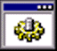

|
This is the official
Fallout
screen saver for Windows 95! Download the zip file and unzip to your
Windows directory using WinZip, or a zip application that can handle
long file names. Use the Display control panel to change your screen
saver to
Fallout Screen Saver
.
|
|
|
This zip file
contains a startup and shutdown screen for Win95. The readme file
contains installation instructions. Thanks to Aaron McMaster!
|
|
|
A sample of the recorded dialogue. This character is Morpheus, voiced by David Warner (Ultimate Evil).
|
|
|
Another sample of the recorded dialogue. This is Set, a ghoul. He is voiced by veteran voice actor Jim Cummings.
|
|
|
An interactive demo of
Fallout
. Notice: This is an early version, with some features missing or inactive that are not in the final release.
Requirements
: Pentium
tm
90 or better, 16 megs of RAM, Win95 w/ DirectX 3.0 or higher (see below
for an installable copy), 30 megs of hard drive space, mouse, and
Microsoft Word
tm
or Wordpad to read the manual.
Installation Instructions
: Download this zip file to a directory on your hard drive. Use WinZip or pkunzip to uncompress the file. View the
readme.txt
file for more information.
|
falldemo.zip
|
|
Don't want to download the complete
Fallout
demo in one big chunk? Grab these four parts instead, and use the batch file to combine them back into a zip file.
Note
: If you downloaded the full 20 meg Win95 Demo above, you do not need these files.
Installation
: Use the
FALLMAKE.BAT
file (see below), or use the DOS COPY command to copy the files back together with the binary switch, example:
COPY
/B FALLDEMO.001+FALLDEMO.002+FALLDEMO.003+FALLDEMO.004 FALLDEMO.ZIP <enter>
|
falldemo.001
|
|
The second part of the Win95 demo.
|
falldemo.002
|
|
The third part of the Win95 demo.
|
falldemo.003
|
|
The fourth, and final, part of the Win95 demo.
|
falldemo.004
|
|
To put the split demo back together, download this batch file to the same directory as the four parts, and type:
FALLMAKE <enter>
to rebuild the Fallout demo.
|

fallmake.bat
|
|
|
|
This is the interactive demo of
Fallout
for the Macintosh.
Requirements
:
A Power Macintosh with at least 16000k of free memory, 640x480
resolution monitor, Sound Manager 3.2.1 or later, and running system
software 7.1.2 or later. Various extensions that are included with the
Fallout
demo.
Recommended
: at least a 75mhz 601 processor.
Installation
: Download the file to a folder on your hard drive. Expand the
Fallout
demo using an application that supports BinHex, such as
Stuffit Expander
.
Important
Note
: We have had conflicts with
Fallout
and QuickTime. See the
Fallout
ReadMe
for more information.
|
FalloutDemo.sit.hqx
|
|
If you don't want to
download the Mac demo in one large file, download these five smaller
files. This is the first part of five.
Note
: If you download the full Macintosh Demo (above) you do not need these five files.
Installation
: Install
Fallout
by dragging and dropping all 5 files at the same time onto
Stuffit Expander
(your browser may automatically have Stuffit de-binhex the files).
Stuffit may try to join all 5 files before they are all de-binhexed. If
this happens, cancel the join and let Stuffit de-binhex all files. Then,
drag all 5 files back to Stuffit and it will then join and unstuff the
Fallout
demo. You will also need
Expander Enhancer
to enable Stuffit Expander to join the 5 files into 1 file.
|
FalloutDemo1.sit.hqx
|
|
This is the second part of five smaller Mac demo files.
|
FalloutDemo2.sit.hqx
|
|
This is the third part of five smaller Mac demo files.
|
FalloutDemo3.sit.hqx
|
|
This is the fourth smaller Mac demo file. Only one more after this...
|
FalloutDemo4.sit.hqx
|
|
This is the fifth, and final, smaller Mac demo file.
|
FalloutDemo5.sit.hqx
|
|
If you want to look at the ReadMe file for the Mac demo, before you download the full demo, then this is for you.
Note
:
If you downloaded either of the two Mac demos above, split or full,
then you do not need this file. It is included with both of those
packages.
|
FalloutReadMe.sit.hqx
|